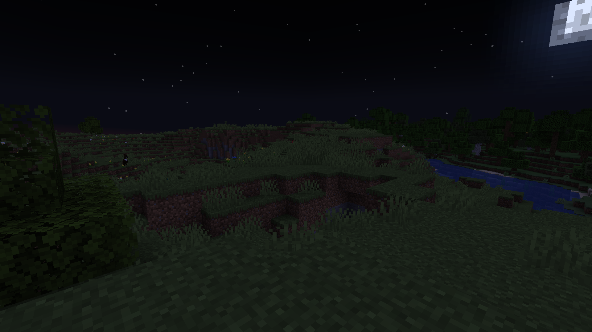

Here are some interesting projects I've worked on:
Home networking:
I run custom solutions for several aspects of my home network. The routing and access points are run on a MikroTik hAP ax3. It's setup with a guest network that blocks all outgoing LAN requests, to keep those pesky smart devices at bay. I have a headless raspberry pi server that runs several services for the network. It runs Pi-hole, which is a DNS based network ad-blocker. It also runs home assistant, which consolidates control of many different smart home devices into one system, and allows easy automation. The last service it runs is Jellyfin, which is an open source media server, which allows me to watch my ripped DVDs on any device. All the services are run in podman containers (a rootless docker alternative).
Brain Control:
This is a project we did for our embedded systems class. The base of the project is a mindflex headset, which comes from a board game. It's modified according to this guide. The headset contains a neurosky chip, which acts as a 1 electrode EEG. The chip automatically filters the data and performs a fourier transform. This data is then sent to the controller in the headset, which forwards it wirelessly to the game. For the project, the chip had wires soldered to intercept the serial data, which is then passed to an Arduino. There is an Arduino library that processes the serial data and allows the parameters to be accessed with getter functions. The raw signal strengths are available, but we use the calculated "concetration" value. We wrote a second library which extends the original, allowing the concentration to be constantly monitored and a given pin set high when it goes above a set threshold. We used this along with a relay to create a plug that would power when you concentrate on it, which we used with a lamp. It's not the most practical in its current state, but there's something really satisfying about turning on a lamp with your mind.
Minecraft Shaders:
This is project isn't finished yet, but I want to show off some screenshots all the same. This is a set of GLSL shading programs I wrote for Iris, a minecraft mod that allows minecraft's rendering code to be overwritten by user code. It's been quite the challenge, as it seems all of Iris' documentation is written for people with lots of prior experience in GLSL and shading, which I had none of when I started the project. Thus far the project adds shadows, dynamic light color from the sun and moon, dynamic lighting for held objects, and other small changes. I'm currently working on better looking water and post processing effects. It still has a lot of work to be done, but it's been one of my most challenging projects in terms of programming and math (rendering is basically all linear algebra). Here are some screenshots from ingame, with and without shaders:
Before:
After:
Dyad:
This is project I created in high school for the state science fair. The idea was to allow control of many brands of smart home devices to be controlled in one app (similar to home assistant, which I hadn't heard of at the time). Ultimately, I was limited by the devices we had at home, so I was only able to implement support for Philips Hue and LIFX smart bulbs. I planned for Honeywell thermostat support, but they had no developer API at the time. It aims to make the setup process as simple as possible and be super easy to use. I created it with my grandparents (who sometimes struggle with smart devices) in mind. Making the app taught me how to use dynamic strings, and the app is either in English, Spanish or Russian depending on your device language. The project was also my first time using threads, as Android does not allow you to run blocking operations on the main thread (to prevent UI lockups)


Hashi-vita:
This is a super basic port of the game Hashi to the PS Vita. Hashi is a bridge building puzzle game, where the object is to connect all the islands without using too many bridges. I created it after I modded my Vita and wanted to try developing for it. It's built using VitaSDK and was my first time really developing anything for a console. It was a super fun to program for and I still play it sometimes.

Terminal Mandelbrot
This program was created because I wanted an excuse to learn the Ncurses library. It generates the mandelbrot set in the terminal and allows you to move around and zoom in. Ncurses is a super useful library for creating TUIs (text user interfaces), a sort of psuedo-GUI within a terminal program.